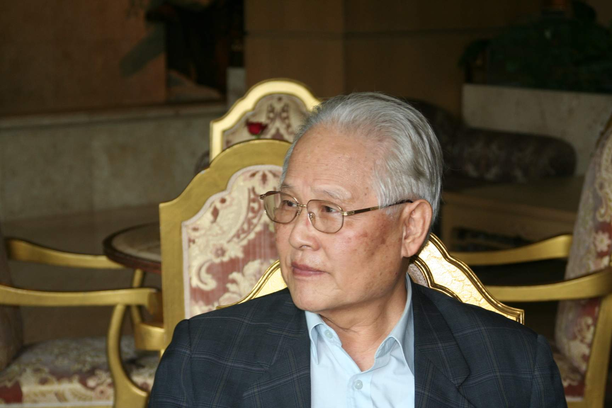

Missionaries
초기 세 선교사

✝최찬영 선교사
대한민국 여권 최초 해외 선교사 · 아시아인 최초 세계성서공회 아·태 총무소명과 파송
최찬영 선교사는 한국전쟁 중 "앞으로 사는 건 하나님이 덤으로 주는 것, 무엇이든 순종하겠다"고 고백했습니다. 1954년 신혼집으로 찾아온 안광국 목사의 부름에 30시간 기도 끝에 선교사로 헌신하기로 결단했습니다.
파송 예배 소식에 미국 북장로교가 영화제작자를 파견해 다큐멘터리 「This High Calling」을 제작했습니다. 한국 정부도 해외 선교사 여권 발급이 처음이어서 여권 발급에 꼬박 1년이 걸렸습니다.
태국 사역 (1956–1962)
"방콕 한 중국인 교회 3층 종탑 건물 제일 윗방에 짐을 풀면서 한국 첫 선교사 가정의 태국 삶이 시작되었다."
그는 태국기독교총회(CCT) 소속 '형제적 관계의 선교사(Fraternal Missionary)'로 방콕병원 원목, 제2교회 담임목사, 신학교 교수로 섬겼습니다. 태국어를 1년 공부한 뒤 태국어로 설교를 시작했습니다.
성서공회 사역 (1962–1992)
1962년 동양인 최초 태국·라오스 성서공회 총무, 1978년 아시아인 최초 아시아·태평양지역 성서공회 총무로 취임, 30년간 성경 번역·인쇄·반포에 헌신했습니다.
1987년 중국 남경 애덕인쇄소(세계 최대 규모 성경인쇄공장) 완공은 그의 최대 업적입니다. 40여 차례 중국을 방문하며 이루어낸 기적이었습니다.
불교 사찰에 성경을 전하다
"금색 쟁반에 금색 포장지로 싼 성경을 불교 종정께 드렸습니다. 몇 달 후 그 절에서 편지가 왔어요. 100명 넘는 승려들이 읽으려 하니 더 보내달라는 내용이었습니다." — 최찬영 선교사 인터뷰
"선교란 현지인들을 섬기기 위해 가는 것이지, 관리하기 위해 가는 것이 아닙니다." 한국장로교 선교역사상 가장 오랜 기간(1956–1991) 활동한 선교사로 기록됩니다.

김순일 선교사
한국 최초 선교학 박사 · 태국 치앙라이 노회장소명과 파송
1954년 대구 경북대에서 열린 국제기독청년봉사단 모임에서 태국인 신학생 마나의 선교 요청을 받고 소명을 받았습니다. 1956년 기독공보 공고를 보고 "주여 내가 여기 있사오니 나를 보내소서"라고 고백하며 응했습니다.
파송 예배에서 35년 중국 선교를 마친 이대영 선교사(당시 총회장)가 파송 서약을 진행했습니다. 이승만 대통령의 특별 배려로 2개월 만에 여권을 받았습니다.
치앙라이 노회장 (1958–1961)
"김선교사는 우리 태국사람과 같은 피부를 가졌고, 지난 5개월 동안 노회의 모든 교회를 방문해 주었습니다. 이런 선교사를 노회장으로 모신다는 것은 우리의 영광입니다." — 태국 교인들의 추천사
언어 수업 후 6개월 만에 첫 설교, 부임 5개월 만에 만장일치 박수로 노회장 추대. 독일 마버거 선교사 7가정·미국 북장로교 선교사 6가정이 사역하는 가운데 나환자 교회 9곳을 포함한 38개 교회를 4년간 섬겼습니다.
학문과 사역
1963년 프린스턴 석사를 8개월 반 만에 완성하고, 1974년 풀러신학교에서 한국인 최초 선교학 박사(D.Miss.)를 취득했습니다. 연간 6만 명에게 복음을 전하고, 약 700명의 회심자를 세웠습니다.
1971년 1월 24일 방콕한인연합교회를 설립했고, 미국 헐리우드 태국인 교회도 개척했습니다.
나환자와 동거동락
치앙마이 멕케인 나환자 재활원에서 환자들과 함께 먹고 자며 메콩강의 물소 소리를 들으며 잠드는 삶을 살았습니다. 송예근 의료선교사를 초청해 함께 사역하게 한 것도 그의 역할이었습니다.

송예근 선교사
한국 최초 전문인 선교사 · 박정희 대통령 주치의한국 최초 전문인 선교사
박정희 대통령 주치의였던 송예근 선교사는 1964년 대한예수교장로회에서 장로 직분을 받고 태국으로 파송받아, 치앙마이 멕케인(McKean) 한센씨병 전문 병원에서 4년간 의료선교를 펼쳤습니다. 1965년 태국 의사면허를 취득했습니다.
환자를 사랑한 의사
"다른 의사들은 환자들이 입을 가리고 말하게 했지만, 송 선교사는 직접 눈을 맞추며 대화했습니다. 그래서 병원의 세 의사 중 가장 인기가 높았습니다."
흰색 바지와 흰색 구두를 즐겨 신던 그는 환자·직원·인근 주민의 건강을 모두 돌봤습니다. 일과를 시작하고 마칠 때마다 직원들과 함께 체조를 하며 공동체를 세웠습니다.
제자를 세운 사역
환자 중 청년을 선발해 의료기술을 교육했습니다. 그의 제자 Azzan Thawat은 병리기사로 성장해 제14노회 서기를 8년간 역임하며, 생전에 "나는 한국 선교사 송예근 박사의 제자"라고 소개했습니다.
태국 청와대(육영수 여사)로부터 피아노를 기증받아 산띠탐 교회에 전달했으며, 박정희 대통령의 배려로 현대건설이 앰뷸런스를 기증하기도 했습니다.
마지막 발자취
1968년 태국 사역 후 에티오피아 한센병 병원에서 4년 추가 사역. 송예근 선교사는 1982년 10월, 전정화 선교사는 2001년 7월 소천하여 미국 네바다 라스베가스에 안장되었습니다.


.jpg)


{kind=link}
{kind=link}
{kind=link}
{kind=link}
{kind=link}
{kind=link}